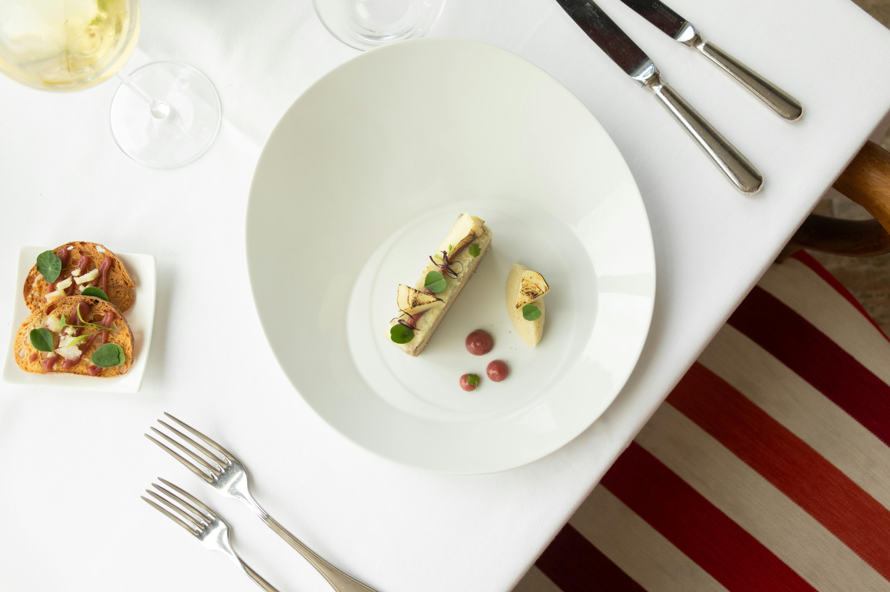

Creating digital
experiences with code.
I’m Tanushree. I build responsive, user-centered interfaces by blending functionality with attention to design detail.
Selected Work

Platieu Restaurant
FREELANCE • IN PROGRESSA French restaurant website developed with a clear user flow.
Sanjeevani Hospital
FreelanceA clean and patient-focused website for a multispeciality hospital, designed to make essential information, services, and appointments easily accessible.
About Me
Frontend Developer &
UI / INTERACTION DESIGN
I’m a frontend developer with a strong interest in UI and interaction design. I build interfaces that are clean, thoughtful, and user-focused.
Using HTML, CSS, JavaScript, React, Bootstrap, Sass, and UX principles, I create responsive web experiences where functionality and design work together.
I care about the small details — how things are spaced, how they move, and how users interact — and I’m continually learning to improve the overall experience through better UI.